参考博客：【深度学习】神经网络入门
- 人工神经网络登场的前景
假设我们有0.14，0.57，01.29，3.57，5.14这5个点，那么第7个是多少？一眼看上去好像看不出来，假如画个图拟合一下，我们可以看到：
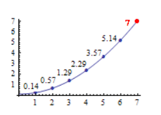
这样我们可以清楚看到，下一个是7。但是，计算机并不会这样画线，所以需要拟合。
这就是回归（曲线拟合）问题。
从最简单的方法开始：
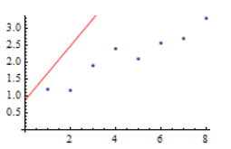
我们初始化一条直线 y=kx+b,然后不断旋转平移调整它，直到它的误差达到最小或者小于某个值（如0.00001）便停止旋转。这就是梯度下降法（Gradient Descent）
计算误差，我们用的是最小二乘法。到这里，好像就解决问题了，但是上面那仅仅适用于直线。所以我们需要更加普适的方法。
我们知道，误差的计算：$误差=（直线点-样本点）^2$，那么，假如我们可以找到合适的参数使得误差最小，那么就是找到了答案。
可以看到，误差的函数是二次函数：
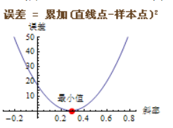
那么，我们知道，当这个函数值最小时候，导数最小，那么我们做一个切线，我们就不断旋转这个切线，找到最小的误差。
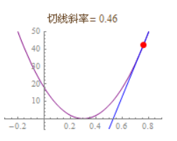
其中，切线每次旋转的幅度就叫做学习率（learning rate），求出的切线的斜率叫做导数，假如要求多个曲线的导数，那其中某个曲线的斜率就叫做偏导数
这种方法存在的问题是会陷入局部最优解，如下图：
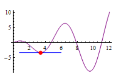
而且，假如维度增加，那么特征数的增加是难以接受的。假如，有一张50*50的灰度图，那么这个图片的维度为50*50=2500，根据公式 $特征数=\frac{维度^2}{2}$，我们可以知道，就这么一个小小的图片，特征数达到了上百万，这明显消耗太大。
所以，就有了神经网络的登场。 - 神经网络中的单个神经元
下图就是单个神经元的基本数学模型：
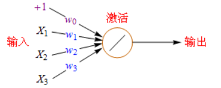
X1，X2这些输入代表了初始特征，w0，w1这些代表了对应的权重，然后将特征加权求和：
$ res = 1*w0 + X1*w1 + X2*w2 + X3*w3 $
然后还可以看到下一步，将加权求和的结果送入激活函数，激活函数主要有以下几个：
- Purelin：$y = x$
- Sigmoid：$y = logsig(x) = \frac{1}{1+e^(-x)}$
- Tansig ：$y = tansig(x) = \frac{e^x - e^(-x)}{e^x + e^(-x)}$
后两个函数的图像如下：
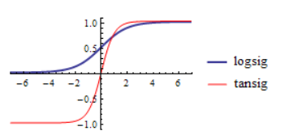
可以看到，logsig的范围为0 ~ 1，tansig的范围为-1 ~ 1 - 神经网络
先上几张简单的神经网络的结构图：
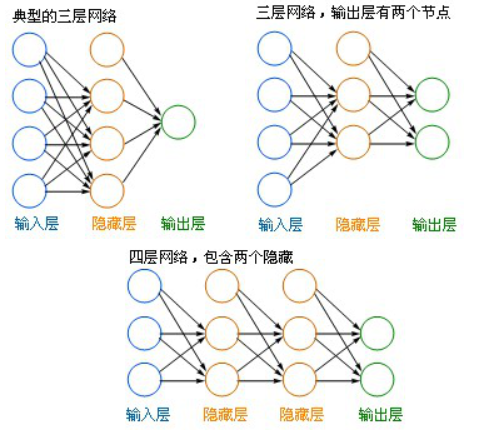
- 左边蓝色的，是输入层
- 中间橙色的，是隐藏层，不管多少层，都是隐藏层
- 右边绿色的，是输出层
在这些节点之间的连接线上，是有权重的，计算方法就是和前面一样的加权求和以及激活。
从输入层通过计算传播到隐藏层，再到输出层，最后输出层的结果和样本值比较，得到误差，这个过程就叫做前向传播。
但是，假如采用前面所述的梯度下降法，不断修改参数使得误差最小，那么，在神经网络中，需要修改每条连接线上的权重参数，这是不容易的。 - 左边蓝色的，是输入层
- BP神经网络
BP反向传播算法的基本思想：利用前向传播最后输出的结果，计算得到误差。然后计算误差的偏导数，再和前面的隐藏层加权求和，如此一层层向后传递，最后到达输入层，用计算出来的偏导数来更新权重。
为了和前向传播的误差区分，这里使用残差来表示误差的偏导数。
残差的计算：
- 输出层 -> 隐藏层：$ 残差 = -(输出值 - 样本值)*激活函数的导数 $
- 隐藏层 -> 隐藏层：$ 残差 = -(右层每个节点的残差加权求和)*激活函数的导数 $
对于这个激活函数的导数，对于以下几个我们常用的激活函数：
- Pureline函数：$ Pureline’(x) = 1 $
- Sigmod函数：$ Sigmod’(x) = Sigmod(x)*(1 - Sigmod(x)) $
- Tansig函数：$ tansig’(x) = 1 - tansig(x)^2 $
残差计算完之后，就可以更新权重了
- 输入层：权重改变量 = 当前节点的激活函数值*右层对应节点的残差*学习率
- 隐藏层：权重改变量 = 输入值*右层节点的残差*学习率
- 偏移值：右层对应节点的残差*学习率
计算举例：
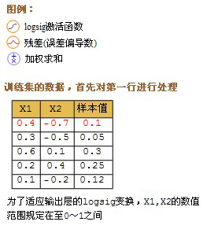
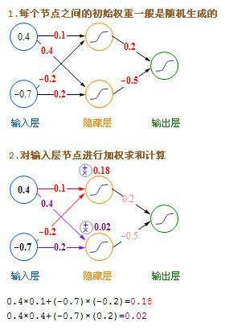
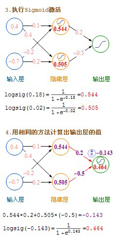
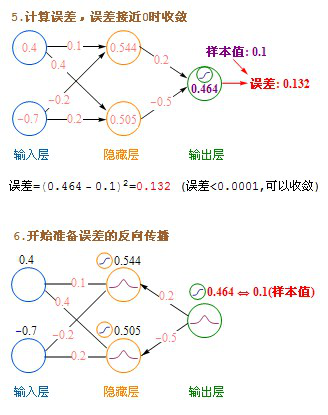
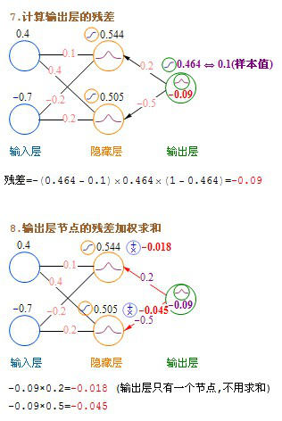
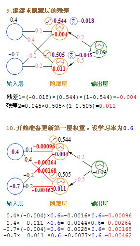
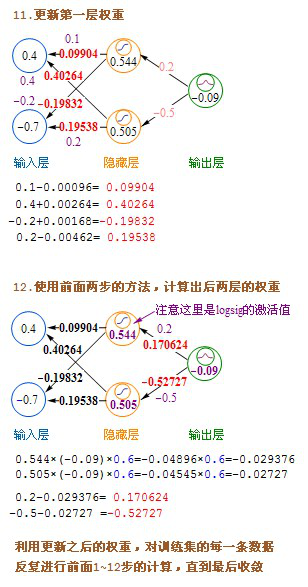